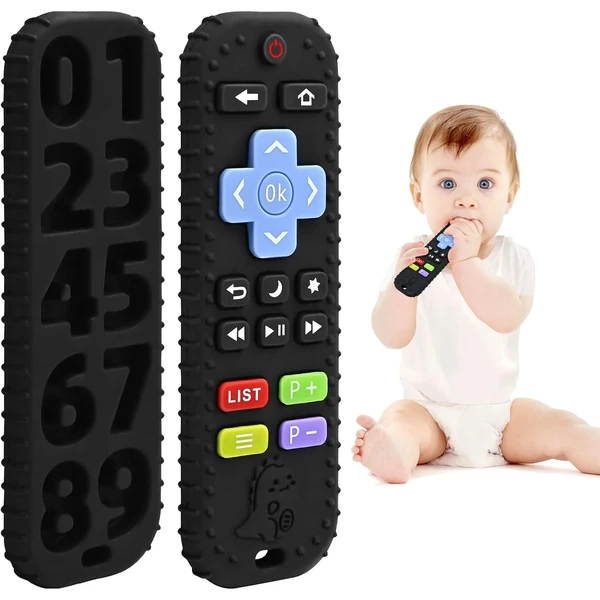

👶 6-12 meses
Mordedor mando a distancia negro
Un mordedor de silicona con forma de mando a distancia, con botones realistas y texturas en relieve. Apto para el lavavajillas y también sirve como juguete de baño.
⭐
¿Por qué nos gusta?
- ✔Textura de botones realista y fácil de agarrar.
- ✔Apto para lavavajillas y esterilizar.
- ✔También funciona como juguete de baño.
💬
Lo que más destacan las familias
Lo que más suele gustar es que se parece de verdad a un mando, así que satisface esa curiosidad por coger el mando real de la tele. Además de aliviar las encías, sirve para el baño sin ningún problema.